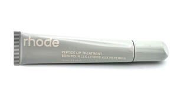
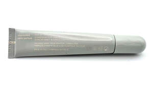
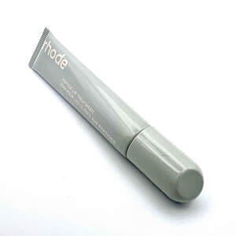

Trade Mark Journal No.2025/029 18 July 2025
UK00004231419 9 July 2025 (3)



3 Dimensional
- Class 3
- Skin care preparations; make-up powder and foundation; moisturisers; beauty care preparations; body care preparations; essential oils for personal use; preparations and products for removing make-up; lotions, creams and conditioners for the face, hands and body; beauty masks; abrasive cloth; abrasive paper; abrasives; adhesives for affixing false hair; adhesives for cosmetic purposes; after-shave lotions; almond milk for cosmetic purposes; almond oil; almond soap; aloe vera preparations for cosmetic purposes; alum stones [astringents]; amber [perfume]; antiperspirant soap; antiperspirants [toiletries]; aromatics [essential oils]; astringents for cosmetic purposes; bath salts, not for medical purposes; baths (cosmetic preparations for-); beard dyes; bergamot oil; bleaching preparations [decolorants] for cosmetic purposes; breath freshening sprays; breath freshening strips; cakes of toilet soap; cedarwood (essential oils of-); citron (essential oils of-); cleansing milk for toilet purposes; colorants for toilet purposes; color-removing preparations; colour-brightening chemicals for household purposes [laundry]; cosmetic kits; cosmetic preparations for slimming purposes; cosmetics for animals; cotton sticks for cosmetic purposes; cotton wool for cosmetic purposes; creams (cosmetic-); dental bleaching gels; deodorant soap; deodorants for human beings or for animals; depilatories; depilatory preparations; douching preparations for personal sanitary or deodorant purposes [toiletries]; dry shampoos; dyes (cosmetic-); eau de cologne; emery; essences (ethereal-); essential oils; ethereal essences; ethereal oils; extracts of flowers [perfumes]; eyebrow cosmetics; eyebrow pencils; eyelashes (adhesives for affixing false-); eyelashes (cosmetic preparations for-); false eyelashes; false hair (adhesives for affixing-); false nails; flower perfumes (bases for-); flowers (extracts of-) [perfumes]; greases for cosmetic purposes; hair colorants; hair dyes; hair lotions; hair spray; hair waving preparations; hydrogen peroxide for cosmetic purposes; incense; ionone [perfumery]; jasmine oil; javelle water; joss sticks; lavender oil; lavender water; lemon (essential oils of-); lotions for cosmetic purposes; make-up; make-up preparations; make-up removing preparations; mascara; massage gels other than for medical purposes; mint essence [essential oil]; mint for perfumery; musk [perfumery]; moustache wax; nail art stickers; nail care preparations; nail polish; nail varnish; neutralizers for permanent waving; oils for perfumes and scents; oils for toilet purposes; perfumery; perfumes; petroleum jelly for cosmetic purposes; polishes (denture-); pomades for cosmetic purposes; pumice stone; rose oil; shampoos; shaving preparations; shaving soap; skin care (cosmetic preparations for-); skin whitening creams; soap; soap for foot perspiration; sunscreen preparations; sun-tanning preparations [cosmetics]; talcum powder, for toilet use; terpenes [essential oils]; tissues impregnated with cosmetic lotions; toilet water; toiletries; transfers (decorative-) for cosmetic purposes; varnish-removing preparations; waving preparations for the hair; wax (depilatory-); hair care preparations; toiletry preparations; skin cleansers; lotions, creams and conditioners for the face, hands and body; beauty masks; skin texturizers; Cleansing creams; Preparations for cleansing the skin; Anti-aging skincare preparations; Skin and eye care preparations; Skincare cosmetics; Peptide lip treatments.
HRBeauty LLC
Representative: Abion UK Limited